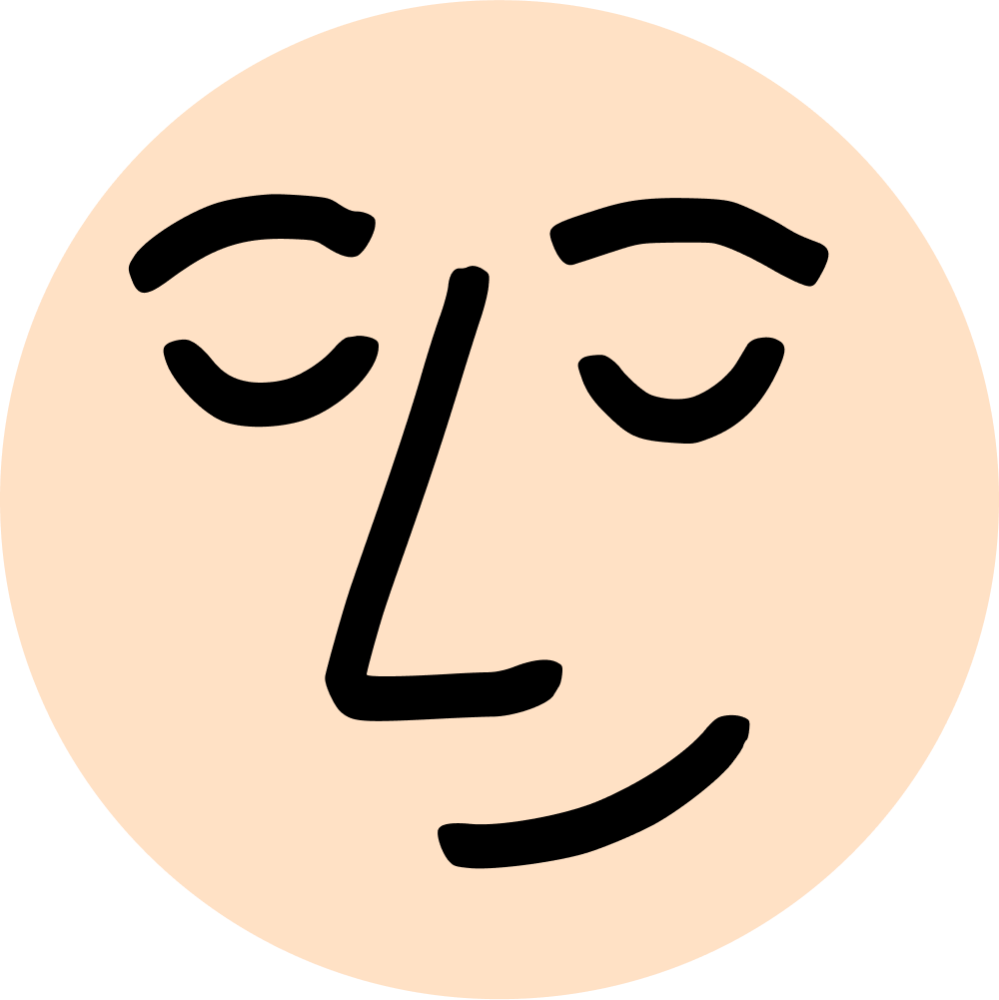

-
October 1, 2024 SilverThis year Obsidian October is all about speed. Learn how you can adopt the latest APIs and get feedback from our team.
-
March 20, 2024 kepanoObsidian Sync is our approach to making the most intuitive and secure sync option. With the new Standard plan, we're excited to make Sync accessible to even more people.
-
January 24, 2024 SilverIt has been nearly four years since the first line of code of Obsidian was written on January 31st, 2020. Today we're thrilled to announce the winners of our fourth annual Gems of the Year awards! This year the Obsidian...
-
January 10, 2024 kepanoIndependent audits help us ensure that our code and procedures meet the highest security standards. Our new Security page hosts audits completed by third parties, including our first report by Cure53 covering Obsidian apps.
-
December 22, 2023 SilverThe year is almost over and that means it's time to nominate your favorite projects from the Obsidian community for our Gems of the Year awards! To nominate projects go here: Gems of the Year 2023 Nomination Nominations are due...
-
November 21, 2023 kepanoObsidian Sync now offers larger vaults, bigger files, regional servers, faster sync, and more flexible storage. New plans are launching in January, and you can join Sync now for a special holiday promotion.
-
November 2, 2023 LiamIn the upcoming Obsidian v1.5, the legacy editor will be removed from the app.
-
September 26, 2023 SilverWelcome back to Obsidian October! For our third year, we're here to help you complete the community projects that you've been meaning to work on. Whether it's a plugin, theme, tool, or template, this is the month to get it...
-
June 5, 2023 LicatHow can you be sure that your data is end-to-end encrypted? In this guide, we provide step-by-step instructions to trustlessly verify the end-to-end encryption of your data using Obsidian Sync.
-
June 1, 2023 kepano
 Say hello to our new logo and app icon. This is the story behind our new branding, which we designed to reflect the principles Obsidian is built on.
Say hello to our new logo and app icon. This is the story behind our new branding, which we designed to reflect the principles Obsidian is built on. -
April 27, 2023 Marcus OlssonAre you building a plugin or theme for Obsidian? Today we're launching our new Developer Documentation site.
-
April 18, 2023 kepanoObsidian Publish now has a 50% lower price and new capabilities that make it ideal for hosting your wiki, knowledge base, documentation, or digital garden.
-
February 21, 2023 SilverResults for our 3rd Gems of the Year awards are out! We received an overwhelming number of great nominations. For the competitive categories, we let the community vote for their favorites among the most nominated submissions. 🎉 Thank you to...
-
February 6, 2023 kepanoA bit of exciting news. I’m joining Obsidian full-time as CEO! I have been using Obsidian and developing for it since Silver and Licat first launched in 2020. I can’t overstate how life-changing Obsidian has been for me. It has...
-
January 23, 2023 SilverHi everyone! Our community is almost 3 years old! 🥳 After basically only having two simple rules (“be nice” and “don’t spam”) for so long, today we’re rolling out our official community code of conduct. If you see behaviors described...
-
December 30, 2022 SilverWe’re almost at the end of 2022! Time to nominate your favorite projects and people this year in the Obsidian community for the Gems of the Year prizes! To nominate go here: Gems of the Year 2022 Nomination Nominations are...
-
December 7, 2022 kepanoOur second Obsidian October has come to a close, and once again we were overwhelmed with all the amazing content, plugins, and themes that the Obsidian community created. We received 84 entries, judged by our panel that included joethei, liam,...